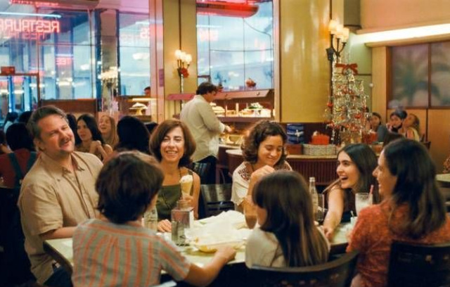

Ainda Estou Aqui
Quero conhecer!.png)
Que filme é esse?
Ainda Estou Aqui é um filme brasileiro baseado no livro de Marcelo Rubens Paiva. A obra literária é um relato emocionante sobre a luta de sua mãe, Eunice Paiva, contra a ditadura militar após a prisão e desaparecimento de seu marido. O filme traz essa história de resistência e dor, mostrando a força de uma mulher que nunca desistiu de buscar justiça.
Cenas
